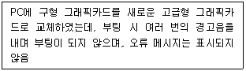
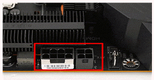
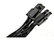
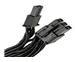
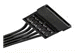
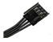
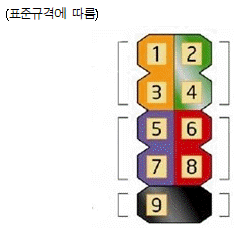
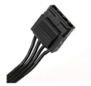
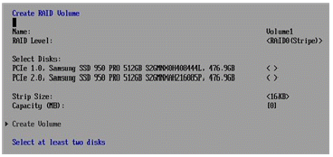

PC정비사-1급 (2022-10-30 기출문제)
1과목: PC운영체제
1. Windows 10 Pro 64비트에 대한 설명으로 올바른 것은?
- 32비트 전용 CPU에도 64비트 운영체제를 설치할 수 있다.
- 64비트 시스템을 꾸미기 위해서 메인보드, 그래픽 카드, 하드디스크 등 모든 하드웨어가 64비트용 이어야 한다.
- 기존의 32비트 장치 드라이버 파일을 그대로 사용할 수 있다.
- 4GB 이상의 물리적 램을 100% 사용하려면 64비트의 설치가 필수적이다.
(정답률: 66%)

2. 시스템을 이전상태로 복원하는 명령어로 알맞은 것은?
- rstrui.exe
- msra.exe
- regedt32.exe
- control.exe /name Microsoft.Troubleshooting
(정답률: 72%)
3. 다음 중 D드라이브에 있는 데이터를 임의의 데이터로 덮어쓰도록 하여 파일 복구가 불가능하도록 만드는 명령 프롬프트 명령어는?
- cipher /W:D
- cipher /Y:D
- defrag D:
- dhkdsk D:
(정답률: 49%)
4. 리눅스 명령을 이용하여 ICQA 디렉터리와 그 하위 디렉터리까지 모든 파일을 메시지없이 강제로 삭제하기 위한 명령은?
- rm -i ICQA
- rm –ir ICQA
- rm -rf ICQA
- rm -ra ICQA
(정답률: 56%)
5. Windows 10 Pro의 레지스트리 구조에 속하지 않은 것은?
- HKEY_LOCAL_CONFIG
- HKEY_CURRENT_CONFIG
- HKEY_CLASSES_ROOT
- HKEY_USERS
(정답률: 52%)
6. Linux에서 모든 파일의 목록과 자세한 사항을 내림차순으로 정렬하기 위한 명령은?
- ls –alc
- ls –alk
- ls –alr
- ls -alu
(정답률: 55%)
7. 실시간체제(Real-Time System)란 처리를 요구하는 자료가 발생할 때마다 즉시 처리하여 그 결과를 출력하거나 요구에 대한 응답을 즉시 실행하는 방식이다. 이에 대한 장점이 아닌 것은?
- 자료가 발생한 지점에서 단말기를 통한 입출력이 가능하므로 사용자의 노력이 절감된다.
- 다량의 자료가 무작위로 도착하는 경우에도 특별히 입출력자료의 저장이나 대기가 필요하지 않다.
- 처리시간이 단축된다.
- 비용이 절감된다.
(정답률: 58%)
8. Windows 10 Pro의 관리 도구에 대한 설명으로 잘못된 것은?
- 데이터 원본(ODBC) - COM(구성 요소 개체 모델) 구성 요소를 구성하고 관리한다.
- Windows 메모리 진단 - 컴퓨터의 메모리가 제대로 작동하는지 확인한다.
- 컴퓨터 관리 - 통합된 단일 데스크톱 도구를 사용하여 로컬 또는 원격 컴퓨터를 관리한다. 컴퓨터 관리를 사용하면 시스템 이벤트 모니터링, 하드 디스크 구성, 시스템 성능 관리 등의 많은 작업을 수행할 수 있다.
- 이벤트 뷰어 - 이벤트 로그에 기록되어 있는 프로그램 시작 또는 중지, 보안 오류 등 중요한 이벤트에 대한 정보를 본다.
(정답률: 66%)
9. Windows 에서 구성 가능한 디스크 어레이 구축 방식 중 데이터 손실의 위험을 감수하더라도 고성능을 추구하기 위해 디스크를 병렬로 배치하는 방식은?
- Raid-0
- Raid-1
- Raid-4
- Raid-5
(정답률: 62%)
10. 컴퓨터 처리 시스템의 성능을 향상시키고 데이터 처리의 생산성 향상을 위해 고려되어야 할 사항으로 잘못된 것은?
- 컴퓨터 프로그램의 처리와 제어 시스템의 동작상태를 항상 감시해야 한다.
- 데이터 처리를 위한 각종 컴퓨터 구성 H/W 요소의 활용이 효율적으로 이루어져야 한다.
- 데이터를 처리하기 위한 정보는 완벽한 상태로 준비가 되어야 한다.
- 컴퓨터를 합리적이고 능률적으로 이용하기 위해서 인적자원과 업무수행의 환경과 조건이 구비되어야 한다.
(정답률: 56%)
11. 일정기간이나 특정 기능을 제한하여 사용하다가, 정식으로 사용하려면 그에 해당하는 비용을 지불해야 하는 소프트웨어는?
- 그래픽 소프트웨어
- 유틸리티
- 셰어웨어
- 백신
(정답률: 74%)
12. 다음 중 명령 프롬프트에서 PC를 10분 후 자동 종료되도록 명령어는?
- shutdown -s -t 600
- shutdown -s -t 10
- shutdown -f -s
- shutdown -a
(정답률: 80%)
13. Windows 10의 UAC 설정 변경을 위한 명령어로 알맞은 것은?
- WINVER.EXE
- USERACCOUNTCONTROLSETTINGS.EXE
- MSPAINT.EXE
- control.exe /name Microsoft.Troubleshooting
(정답률: 72%)
14. Windows 10 Pro에서 가상 메모리 설정시 제공되는 정보가 아닌 것은?
- 드라이브[볼륨 레이블]
- 모든 드라이브의 총 페이징 파일 크기
- 선택된 드라이브의 페이징 파일 크기
- 선택된 드라이브의 세그먼트의 크기
(정답률: 70%)
15. 입력되는 자료들을 일정 기간 동안 또는 일정량의 자료를 모아 한번에 처리하는 운영체제 방식은?
- 온라인처리방식(On-Line Processing System)
- 다중프로그래밍체제(Multiprogramming System)
- 일괄처리체제(Batch Processing System)
- 시분할체제(Time Sharing System)
(정답률: 78%)
2과목: PC주변기기
16. 컴퓨터의 주기억 장치에 대한 설명으로 올바르지 않은 것은?
- 반도체 기억소자를 주로 사용한다.
- 고속으로 자료를 액세스할 수 있어야 한다.
- 중앙처리장치와 직접 자료를 교환할 수 있다.
- 보조기억장치에 비해 용량이 상대적으로 크다.
(정답률: 63%)
17. 주기억 장치와 CPU의 속도차가 크므로, 인스트럭션의 수행 속도를 CPU 속도에 맞추기 위한 완충 장치로써 사용하는 메모리는?
- RAM
- ROM
- Cache
- RPROM
(정답률: 61%)
18. 컴퓨터에 사용되는 CPU내의 기억장치 요소로 올바르지 않은 것은?
- ALU(Arithmetic Logic Unit)
- MAR(Memory Address register)
- MBR(Memory Buffer Register)
- PC(Program counter)
(정답률: 38%)
19. 주기억 장치로부터 수행할 명령을 가져와 레지스트리에 쓰기까지의 시간은?
- Search Time
- Instruction Time
- Seek Time
- Access Time
(정답률: 37%)
20. 프린터의 전송 모드에 대한 규약이 아닌 것은?
- EPP
- ECP
- LPT
- SPP
(정답률: 46%)
21. 비스프링 방식으로 구동하는 컴퓨터 키보드의 종류로 올바르지 않은 것은?
- 멤브레인
- 플런저
- 기계식
- 팬터그래프
(정답률: 48%)
22. 인터레이스 모드 모니터에서 주사율과 수직 주파수간의 관계는?
- 주사율 = 수직 주파수
- 주사율 = 수직 주파수/2
- 주사율 = 수직 주파수*2
- 주사율 = 수직 주파수/3
(정답률: 50%)
23. 사무실 등에서 네트워크를 통해 복수의 PC가 공유해서 사용할 수 있는 프린터로 올바른 것은?
- 단독 프린터
- 공동 프린터
- 네트워크 프린터
- 사무용 프린터
(정답률: 83%)
24. CPU 클럭을 계산하는 방법으로 올바른 것은?
- 시스템 클럭 + 배율
- 시스템 클럭 * 배율
- 시스템 클럭 / 배율
- 시스템 클럭 = 배율
(정답률: 79%)
25. CISC 프로세서와 RISC 프로세서에 대한 설명 중 잘못된 것은?
- CISC : RISC 보다 레지스터의 수가 많다.
- RISC : CISC 보다 처리 속도가 빠르다.
- CISC : RISC 보다 비싸며 전력 소모가 많다.
- RISC : 고정된 길이의 명령어를 사용한다.
(정답률: 43%)
26. 적외선을 이용하는 무선 통신 인터페이스에 사용되는 기술은?
- IEEE 1394
- SCSI
- USB
- IrDA
(정답률: 69%)
27. 다음 중 RS232C 포트에 해당 하는 것은?
- PS/2 커넥터
- USB 커넥터
- COM 커넥터
- LPT 커넥터
(정답률: 59%)
28. 컴퓨터의 출력장치인 모니터의 종류로 올바르지 않은 것은?
- CRT
- LCD
- PDP
- FND
(정답률: 68%)
29. 갑작스런 정전에도 컴퓨터에 전원을 계속 공급해 줄 수 있는 장치는?
- Power Saver
- IPS
- UPS
- Power Supply
(정답률: 76%)
30. 하드디스크의 데이터 주소지정 방법 중 LBA(24bit) 방식의 최대 지원 용량은?
- 160GB
- 125GB
- 150GB
- 137GB
(정답률: 45%)
3과목: 디지털 논리회로
31. JIN 사원은 여러 대의 컴퓨터를 Windows 10으로 업그레이드하려고 한다. 이때 네트워크 상에 있는 저장소 및 장치를 이용해서 부팅하는 방법은?
- SSD
- Optical Drive
- Flash Drive
- PXE
(정답률: 56%)
32. 사용자 시스템에 Windows10 OS를 설치하고 있다. 사용자는 설치하는 동안 모든 설정과 파일이 그대로 유지되기를 원한다. 다음 중 사용해야 하는 업그레이드 방법은?
- 네트워크 설치
- 클린 설치
- 인플레이스 업그레이드
- 이미지 배포
(정답률: 63%)
33. BIOS Setup의 기능으로 잘못된 것은?
- 입출력 데이터의 처리 및 연산기능 수행
- 메인보드의 성능과 기능을 제어
- 컴퓨터의 부팅과 하드웨어를 제어
- 컴퓨터에 장착된 장치를 인식하고 관리
(정답률: 75%)
34. 메모리에 대한 설명 중 잘못된 것은?
- RDRAM은 짝수개로 장착을 하여야 한다.
- DDR 메모리 PC2100과 PC2700 메모리를 혼용시, 메모리속도가 낮은 PC2100으로 작동한다.
- SDRAM은 슬롯 규격이 맞는다면, 빈 메모리 슬롯 아무 곳에나 장착이 가능하다.
- DDR-SDRAM은 슬롯 규격이 맞아도, 메모리 슬롯 중 지정된 위치에 장착을 하여야 한다.
(정답률: 60%)
35. 부팅 에러 메시지와 원인에 대한 설명 중 잘못된 것은?
- System Halted : 시스템의 어느 한 부분 쇼트, CPU 냉각팬 회전 감지 오류
- Gate A20 Error : 마우스의 컨트롤러 문제
- Missing operation system, Non-System disk or disk Error : 부팅 디스크에 운영체제가 없거나 시스템 파일이 손상된 경우 발생
- CMOS Checksum Error : CMOS 배터리 문제, 정전기 문제
(정답률: 72%)
4과목: PC유지보수
36. 다음 문제의 원인일 가능성이 가장 높은 것은?

- 오래된 BIOS 문제
- 파워서플라이 정격 출력 부족
- RAM 불일치 문제
- 오래된 펌웨어 문제
(정답률: 64%)
37. 다음은 CPU 전원부 그림이다. 알맞은 커넥터를 찾으시오.





(정답률: 52%)
38. 부팅 시 “BOOTMGR is missing”메시지가 출력되어 BIOS를 확인하였는데 운영체제가 설치된 HDD가 인식이 되며, 우선 부팅으로 설정되어 있다. 다음 중 문제의 원인으로 가장 적절한 것은?
- 윈도우 시스템 파일 손상
- BIOS 초기화 문제
- BIOS가 삭제된 문제
- RAM에 연결되지 않음
(정답률: 76%)
39. 리눅스 환경에서 정기적으로 또는 일정 시간이 되면 특정 작업이 실행이 되도록 시스템 작업을 예약할 수 있는 데몬은?
- at
- cron
- apt-get
- yum
(정답률: 49%)
40. 다음 그림은 메인보드 전면패널(F-Panel) 단자 그림이다. 규격에 맞는 커넥터를 찾으시오.

- 1, 3 : HDD LED
- 2, 4 : POWER S/W
- 5, 7 : POWER LED
- 6, 8 : RESET S/W
(정답률: 63%)
41. 다음 파워서플라이의 커넥터 일부분이다. 장착할 수 없는 장치를 찾으시오.

- 케이스 팬(Fan)
- HDD
- ODD
- VGA
(정답률: 75%)
42. 다음 그림을 참조하여 셋팅 과정을 잘못 분석한 것을 찾으시오.

- 컴퓨터 BIOS에서 CHIPSET SATA Mode 부분을 RAID로 설정하였다.
- 현재 SATA포트에 2개의 HDD가 장착 되어 있다.
- Devices 메뉴에 Add-In config 메뉴에 IRST 기능에 환경설정에 들어가 RAID 설정을 진행한다.
- SSD 2개를 스트라이프 모드로 셋팅하고 있다.
(정답률: 59%)
43. 컴퓨터가 갑자기 블루 스크린이 뜨더니 재부팅 후 화면에 다음과 같은 메시지가 출력된다. 해결 방안으로 잘못된 것은?
- Windows 설치 DVD나 USB로 부팅하여 복구모드로 진입하여 시스템 복구를 진행해 본다.
- 하드디스크 베드섹터 검사를 진행해 본다.
- 하드디스크 케이블 접촉불량을 점검해 본다.
- 바이오스에 부팅 순서를 변경해 본다.
(정답률: 50%)
44. Windows로 부팅한 이후 갑자기 다운이 되는 증상이 발생하는 이유로 잘못된 것은?
- CPU의 오버 클럭킹은 CPU 속도와 관련된 것으로 밀접한 관련이 없다.
- 드라이버의 버그이거나 오류가 발생하면 나타날 수 있다.
- 파워 서플라이의 전력이 부족하여도 나타난다.
- Windows의 레지스트리에 기록된 정보에 오류가 발생하면 나타난다.
(정답률: 75%)
45. Windows를 사용하는 도중 속도가 점점 느려지는 현상이 발생하였다. 문제의 원인으로 잘못된 것은?
- 레지스트리가 점점 커지고 불필요한 내용이 쌓이기 때문이다.
- Windows에서 사용하는 DLL과 드라이버 파일이 많아지기 때문이다.
- 하드디스크의 단편화가 심해지기 때문이다.
- 주기억 장치(RAM)의 단편화가 심해지기 때문이다.
(정답률: 68%)
46. 클래스 C에 해당되는 IP 주소는?
- 107.140.23.4
- 178.140.232.5
- 217.232.147.3
- 247.231.142.3
(정답률: 62%)
47. 스니퍼링(Sniffering)을 원천적으로 막을 수 있는 방법은?
- 스위치 허브의 사용
- 라우터의 사용
- DNS의 사용
- 스태커블 허브의 사용
(정답률: 53%)
48. 다른 컴퓨터에서 '이 컴퓨터에 대한 사용자 계정과 암호가 있는 사용자만 공유 파일이 컴퓨터에 연결된 프린터 및 공용 폴더에 액세스할 수 있습니다.'에 해당하는 메뉴를 선택하시오.
- 암호 보호 공유 켜기
- 암호 보호 공유 끄기
- 암호 보호 공유 재설정
- 암호 보호 공유 차단
(정답률: 67%)
49. 네트워크에서 지정된 호스트에 도달할 때까지 통과하는 경로의 정보와 각 경로에서의 지연 시간을 추적하는 명령어는?
- ping
- tracert
- ipconfig
- icmp
(정답률: 55%)
50. [제어판] -> [WINDOWS] 보안에 대한 설명이 잘못된 것은?
- 바이러스 및 위협 방지를 활용하여 내장형 WINDOWS DEFENDER 및 설치형 백신의 설정을 할 수 있다.
- 계정 보호를 활용하여 MICROSOFT에 로그인을 하여 계정보안 강화를 할 수 있다.
- 장치 보안을 활용하여 USB의 접속 차단을 할 수 있다.
- 장치 성능 및 상태를 확인하여 저장소 용량 / 앱 및 소프트웨어 / WINDOWS 시간 서비스의 상태보고서를 확인할 수 있다.
(정답률: 42%)
5과목: PC네트워크
51. 다음은 SNMP에 대한 설명이다. 올바른 것은?
- 모든 SNMP 데이터는 인코딩 되어서 전송된다.
- 162, 163 두개의 포트를 통해 메시지를 주고 받는다.
- SNMP 메시지를 전송하는 전송계층 프로토콜은 TCP를 사용한다.
- SNMP는 접속종류에 관계없이 동일한 커뮤니티 값을 가진다.
(정답률: 48%)
52. 어떤 컴퓨터든 통신 세션을 시작할 수 있는 통신 모델을 지칭하며 네트워크에 연결되어 있는 모든 컴퓨터들이 서로 대등한 입장에서 데이터나 주변장치 등을 공유할 수 있다는 의미를 담고 있는 모델은?
- Client/Server
- Master/Slave
- Peer to Peer
- Network to Network
(정답률: 60%)
53. 메일 서비스와 가장 관계가 없는 것은?
- SMTP
- FTP
- POP3
- MIME
(정답률: 54%)
54. 외부의 불법 침입으로부터 내부 자료를 보호하고 외부로부터 유해 정보 유입을 차단하기 위한 정책과 이를 지원하는 하드웨어 또는 소프트웨어를 뜻하는 것은?
- bridge
- gateway
- firewall
- transceiver
(정답률: 74%)
55. 다음 Windows 10 home 에 기본으로 설치 되지 않은 msc는?
- gpedit.msc
- lusrmgr.msc
- wf.msc
- services.msc
(정답률: 56%)
56. 전가산기(full adder)의 설명으로 옳은 것은?
- 입력비트3개의 합과 출력올림수를 구하는 조합논리회로
- 입력비트2개의 합과 출력올림수를 구하는 조합논리회로
- 2개의 반가산기와 1개의 AND게이트로 구성
- 2개의 반가산기와 1개의 NOT게이트로 구성
(정답률: 52%)
57. 다음 중 2진 코드 설명과 거리가 먼 것은?
- BCD 코드 - 네자리의 2진수 표시로서 한 개의 10진수를 표현해 주는 코드
- 3초과 코드 - BCD 코드에 (3) 을 더한 코드
- 그레이 코드 - 계속되는 수의 변화가 2 bit 씩 변화되는 코드
- 알파 뉴메릭 코드 - 알파벳과 숫자, 기호를 표시하는 2진 코드
(정답률: 32%)
58. 레지스터(Register)에 대한 설명으로 올바르지 않은 것은?
- 플립플롭을 여러 개 접속시켜 구성한다.
- 중앙처리장치의 산술논리 연산에 사용된다.
- 8비트 레지스터는 7개의 플립플롭이 필요하다.
- 시프트레지스터를 이용하여 곱셈과 나눗셈을 수행할 수 있다.
(정답률: 52%)
59. 십진수 145를 BCD코드로 올바르게 표시한 것은?
- 0010 0000 0001
- 0001 0100 0101
- 0000 1100 1001
- 0001 0010 1001
(정답률: 62%)
60. 다음 중 2진수 011010의 2의 보수는?
- 011001
- 100101
- 100110
- 010110
(정답률: 54%)